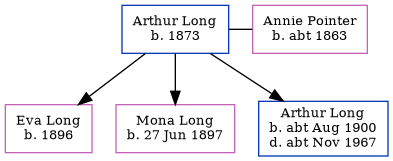

Arthur Watts Long 1873 -
[ Home ] | [ Calendar ] | [ Surnames Index ] | [ Errors ] | [ Family History ]Arthur Long, the husband of Annie Elizabeth Pointer (the first cousin three-times-removed on the father's side of Nigel Horne), was born in Sandwich, Kent, England in 18731 and married Annie (a laundress with whom he had 3 children: Eva Gertrude, Mona Winifred Catherine and Arthur Manners Chichester) at Registrar's Office, Minster, Thanet, Kent, England on 24 Aug 18942.
During his life, he was living at Spinners Cottage, Worth, Kent on 31 Mar 19011; and at Deft Street in Sandwich on 2 Apr 19113.
Children
- Eva Gertrude was born in 1896
- Mona Winifred Catherine was born on 27 Jun 1897
- Arthur Manners Chichester was born c. Aug 1900
Citations
- 1901 England, Wales & Scotland Census - Findmypast (was age 28 and the head of the household)
- England & Wales Marriages 1837-2005 - Findmypast
- 1911 Census for England & Wales - Findmypast (was age 39 and the head of the household)
Media
Thanet Advertiser - 1 Sep 1894

1911 Census for England & Wales - GBC/1911/RG14/04550/0427/1
Family Tree
Map
Generated by ged2site. Last updated on Jul 3, 2024